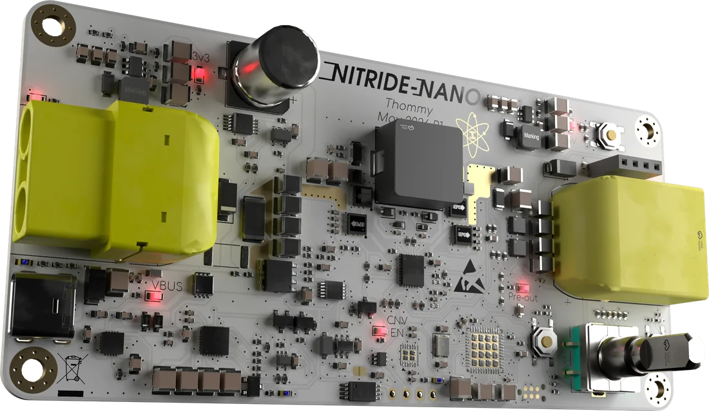
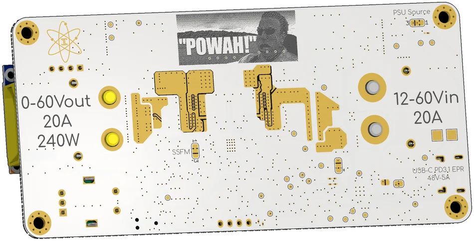
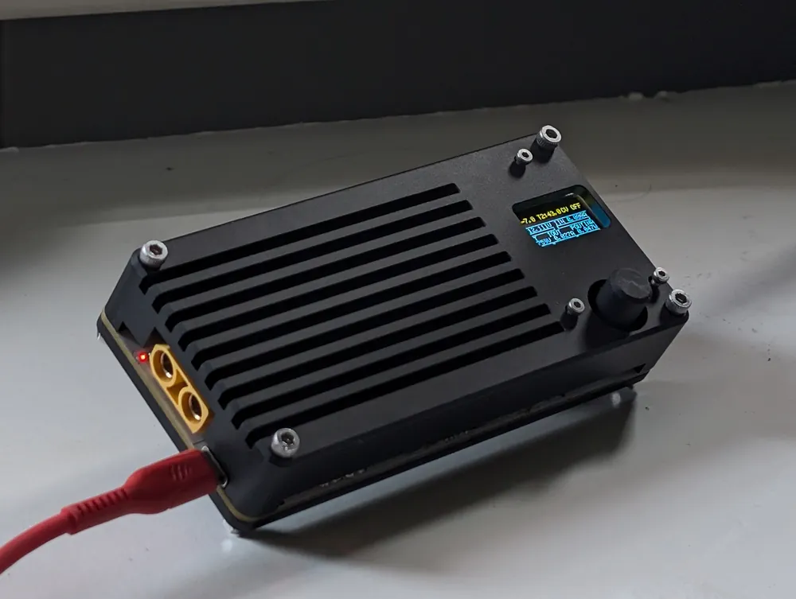

Work 03 Power supply
Two hundred and forty watts,
in a pocket.
A USB-C PD 3.1 buck/boost that turns a laptop charger into a 0–60 V bench supply. 1 MHz switching, eGaN FETs, and a controller kept out of its own lossiest operating mode by an MCU that negotiates PPS, AVS and EPR.

01The brief
The target was a portable programmable supply — the same job as a Miniware MDP-XP, but with more power density and a wider voltage range, and less concern about output ripple. Input from USB-C Power Delivery or a high-voltage DC source; output 0–60 V at up to 20 A from an XT90.
Small is the whole point. At 1 MHz the inductor and capacitors shrink enough for the board to fit inside a printed housing the size of a small brick, and the GaN FETs make 1 MHz practical without the switching loss eating the density gain.
02Specification
| Input | 12–48 V — USB-C PD or XT90 |
|---|---|
| Output | 0–60 V, 20 A, 240 W |
| Topology | Non-inverting buck/boost, LT8390A |
| Switching | 1 MHz |
| Power FETs | EPC2367 eGaN |
| Power monitor | INA228, 16-bit, I²C |
| MCU | STM32G474CEUx |
| Display | SSD1306 0.96″ OLED, 3-button UI |
| PD | Fixed PDO · PPS 5–21 V · AVS/EPR 15–48 V |
| Peak efficiency | 94.8 % at 36 V in → 52.4 V, 219 W out |
| Peak input power | 240.8 W at 14 V in, 90.2 % |
03The trick: auto-tracking PD
A non-inverting buck/boost is efficient in buck, efficient in boost, and noticeably worse in the four-switch band where both bridges switch. nitride-nano negotiates the input voltage instead of accepting whatever the charger offers: the MCU derives the PD rail from the requested output, so the LT8390A stays in a clean buck or boost region across the whole 0–60 V range.
That means speaking full USB-C PD on the input side — fixed PDOs, PPS in 50 mV steps, and AVS/EPR up to 48 V — and choosing the rail before the converter ever has to regulate. The negotiation is as much a part of the power stage as the inductor.
04Measured, not modelled
Revision 1 delivered 164 W at 94.1 %; revision 2, with a 2.2 µH Coilcraft XAL1010-222MED, delivers 219 W at 94.8 % peak — 240.8 W in, measured on a Riden RD6024 and an EA-EL 3160-60 load.
The two revisions are in the repository with their full test tables. Publishing the worse number next to the better one is the only way the better one means anything.
05Thermal
The enclosure was simulated in FreeCAD: about 38 °C with a fan when 10 W of loss goes into the heatsink from the GaN FETs. In practice the FETs barely exceed 60 °C, because not all of that heat leaves through the top of the package — the inductor core, at around 90 °C, is by far the hottest thing on the board. Which is the usual lesson: the magnetic component is the thermal design.
06The rest of it
An STM32G474 runs the bare-metal UI on a 0.96″ OLED with three buttons, reads an INA228 for input and output power, and shows real-time efficiency. The power stage is EPC2367 eGaN with an LT8390A controller, following the EVAL-LT8390A topology. USB-C PD input stage based on the open-source PD240W design.

